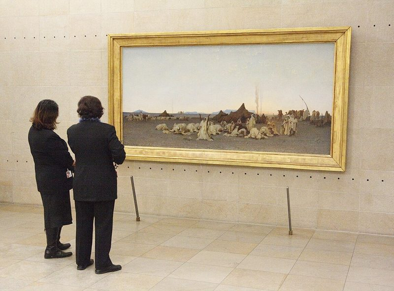
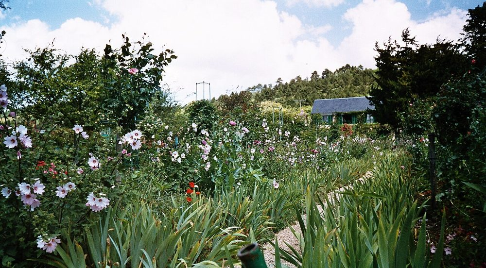

Devant cette toile attribuée à Rembrandt, les experts restent dubitatifs.
Faced with this canvas attributed to Rembrandt, the experts remain sceptical.
On dit aussi avoir l'air dubitatif. Synonymes : sceptique, perplexe.
Also: avoir l'air dubitatif (to look doubtful). Synonyms: sceptique, perplexe.

Deux visiteuses devant une toile, au musée d'Orsay · Two visitors in front of a painting
des murs fins
nom + adjectifENthin walls
Les murs de mon appartement sont si fins que j'entends mes voisins parler.
The walls of my flat are so thin that I can hear my neighbours talking.
fin / fine ; on dit aussi minces.
fin / fine; minces is also possible.
des murs épais
nom + adjectifENthick walls
Les murs épais de ce village de pierre gardent la fraîcheur en été.
The thick walls of this stone village keep the coolness in summer.
épais / épaisse ; le nom : l'épaisseur (f.).
épais / épaisse; noun: l'épaisseur (thickness).
Gordes, village perché du Luberon · Gordes, a hilltop village in Provence
être ivre
locutionENto be drunk
Il était ivre et chantait dans l'escalier à deux heures du matin.
He was drunk and singing on the stairs at two in the morning.
Ivre de joie, elle a couru annoncer la nouvelle.
Drunk with joy, she ran to share the news.
Registres : ivre (neutre, soutenu), soûl (courant), bourré (familier). Le nom : l'ivresse. Au figuré : ivre de joie, de liberté.
Registers: ivre (neutral, formal), soûl (everyday), bourré (slang). Noun: l'ivresse. Figurative: ivre de joie, de liberté.
être bruyant / bruyante
locutionENto be noisy
Les terrasses des cafés sont bruyantes le samedi soir.
Café terraces are noisy on Saturday evenings.
Le nom : le bruit ; faire du bruit.
Noun: le bruit; faire du bruit = to make noise.
il faudrait
verbe falloir · conditionnelENwe should, it would be necessary
Il faudrait prévenir les voisins avant la fête.
We should warn the neighbours before the party.
Voir la grammaire ci-dessous.
See the grammar point below.
3
Grammaire : il faut, il faudrait, il aurait fallu
Grammar: il faut, il faudrait, il aurait fallu
Un verbe, trois nuances
il faut→ il faudrait→ il aurait fallu
Falloir est un verbe impersonnel : son sujet est toujours il. Selon le temps, il exprime une obligation, un conseil ou un regret.
Falloir is an impersonal verb: its subject is always il. Depending on the tense, it expresses an obligation, a piece of advice or a regret.
il fautprésent
une obligation, une nécessité
an obligation, a necessity
Il faut réserver pour voir l'exposition.
You have to book to see the exhibition.
il faudraitconditionnel présent
un conseil, une suggestion polie
advice, a polite suggestion
Il faudrait fermer la fenêtre : la rue est bruyante.
We should close the window: the street is noisy.
il aurait falluconditionnel passé
un regret, un reproche
a regret, a reproach
Il aurait fallu choisir un appartement aux murs plus épais.
We should have chosen a flat with thicker walls.
il faut / il faudrait + infinitif
règle générale, pour tout le monde
general rule, for everyone
Il faudrait faire gaffe.
We / one should be careful.
il faut / il faudrait + que + subjonctif
pour une personne précise
for a specific person
Il faudrait que tu fasses gaffe.
You should be careful.
Il ne faut pas + infinitif = une interdiction. Pour dire qu'une chose n'est pas nécessaire, on dit ce n'est pas la peine de / il n'est pas nécessaire de.
Il ne faut pas + infinitive = must not (a prohibition). To say something is not necessary: ce n'est pas la peine de / il n'est pas nécessaire de (you don't have to).
Il ne faut pas toucher les tableaux.
You must not touch the paintings.
Ce n'est pas la peine de réserver le mardi.
There's no need to book on Tuesdays.
Avec un pronom : il me faudrait un peu de temps = j'aurais besoin d'un peu de temps.
With a pronoun: il me faudrait un peu de temps = I would need a little time.
Pour finir toutes mes bricoles, il me faudrait une journée entière.
To finish all my odd jobs, I would need a whole day.

Le jardin de Claude Monet à Giverny · Claude Monet's garden at Giverny4
Exercices
Exercises
La correction apparaît tout de suite. Chaque bonne réponse vaut un point ; vos erreurs s'ajoutent à la rubrique « À revoir », avec un lien vers la règle.
The answer is checked straight away. Each correct answer is worth one point; your mistakes are added to « À revoir », with a link to the rule.
1
EXERCICE 1
Conjuguez au temps qui convient
Conjugate in the appropriate tense
Lisez bien toute la phrase : c'est le contexte qui indique le temps et le mode (indicatif, subjonctif, conditionnel).
Read the whole sentence carefully: the context tells you the tense and mood (indicative, subjunctive, conditional).
1Si les murs avaient été plus épais, nous …… beaucoup moins de bruit.
entendre
2Il faut que tu …… gaffe en descendant : les marches sont glissantes.
faire
3Hier soir, les voisins …… si bruyants que personne n'a pu dormir.
être
4Je doute qu'il …… conscience de sa maladresse.
avoir
5Quand j'…… mes bricoles, je te rejoindrai au musée.
finir
6Il …… réserver avant : maintenant, l'exposition est complète.
falloir
7Bien qu'elle …… dubitative au début, elle a fini par adorer l'exposition.
être
8S'il buvait moins, il ne …… pas ivre à chaque dîner.
être
9Demain matin, j'…… deux ou trois bricoles au marché.
acheter
10Avant que le dîner ……, elle avait déjà fait une gaffe.
commencer
2
EXERCICE 2
Le mot juste
The right word
Complétez chaque phrase avec un mot ou une expression de la liste. Faites les accords si nécessaire.
Complete each sentence with a word or expression from the list. Make agreements where necessary.
1Ne lui parle pas de son ancien travail : ce serait …….
2Devant ce prétendu Picasso, le conservateur avait l'air …….
3« …… ! Le pont est glissant. »
4Avec des murs aussi ……, j'entends mon voisin éternuer.
5Ce vieux mas a des murs si …… qu'il reste frais en plein mois d'août.
6Rien de spécial ce week-end, juste quelques …… à faire au jardin.
7Il a renversé le vase par …… ; il est désolé.
8…… prévenir les voisins avant d'organiser la fête.
9Les enfants sont très …… quand ils jouent dans la cour.
10…… de joie, elle a couru annoncer la nouvelle à toute la famille.
3
EXERCICE 3
Traduisez en français
Translate into French
Écrivez votre traduction, comparez-la avec le corrigé, puis indiquez si elle était juste. Plusieurs traductions sont souvent possibles : vérifiez surtout les points signalés.
Write your translation, compare it with the model answer, then say whether it was right. Several translations are often possible: check above all the points highlighted.
1I've got a few bits and bobs to buy before the shops close.
2Watch out, the walls are so thin that the neighbours hear everything!
3We should have booked the exhibition tickets earlier.
4She looked doubtful when I told her the painting was a copy.
5It wasn't rude, just a bit of clumsiness.
6He was drunk and very noisy: inviting him was quite a blunder.
✦
POUR ALLER PLUS LOIN
Réflexion philosophique
Philosophical reflection
Nos maladresses nous rendent-elles plus humains ?
Do our blunders make us more human?
Écrivez un texte argumenté d'environ 20 lignes. Utilisez au moins trois mots de la leçon et une construction avec il faudrait ou il aurait fallu.
Write an argued text of about 20 lines. Use at least three words from the lesson and one construction with il faudrait or il aurait fallu.
Pour trouver vos idées
Pourquoi une gaffe nous met-elle si mal à l'aise ? Que craignons-nous vraiment : le regard des autres, ou notre propre image ?
Why does a blunder make us so uncomfortable? What do we really fear: other people's eyes, or our own image?
Une maladresse peut-elle révéler une vérité que la politesse cachait ?
Can a blunder reveal a truth that politeness was hiding?
En art comme dans la nature, rien n'est parfaitement régulier : la touche visible d'un peintre, une branche tordue. L'imperfection a-t-elle une beauté ?
In art as in nature, nothing is perfectly regular: a painter's visible brushstroke, a crooked branch. Does imperfection have a beauty of its own?
Faut-il chercher à tout maîtriser ? Que perdrait-on en ne commettant plus jamais d'erreur ?
Should we try to control everything? What would we lose if we never made a mistake again?
Pour organiser votre texte
1
Introduction· 3-4 lignes
Partez d'une situation concrète (une gaffe en société), puis posez la question : la maladresse est-elle seulement une faiblesse ?
Start from a concrete situation (a social blunder), then ask: is clumsiness only a weakness?
2
Première partie· 6-7 lignes
La maladresse comme faiblesse : la honte, les codes sociaux, le désir de bien faire.
Clumsiness as weakness: shame, social codes, the wish to do well.
3
Deuxième partie· 6-7 lignes
La maladresse comme signe d'humanité : spontanéité, sincérité, apprentissage, beauté de l'imperfection (le kintsugi japonais, la touche des impressionnistes).
Clumsiness as a sign of humanity: spontaneity, sincerity, learning, the beauty of imperfection (Japanese kintsugi, the impressionists' brushwork).
4
Conclusion· 3-4 lignes
Répondez à la question et ouvrez : ce qui compte, n'est-ce pas surtout la façon de réparer ?
Answer the question and open it up: isn't what matters mostly the way we make amends?
Mots utiles
avouer · s'excuser · le regard d'autrui · la spontanéité · l'imperfection · la sincérité · se pardonner · maîtriser · un faux pas
Connecteurs
Certes… mais · D'une part… d'autre part · Pourtant · En effet · C'est pourquoi · Il faudrait sans doute · En définitive
Exemple de problématique : si la maladresse nous expose au jugement des autres, n'est-elle pas aussi ce qui nous rend sincères et attachants ? Piste : on pourrait conclure qu'il ne faut pas tant éviter les gaffes que savoir les reconnaître et les réparer avec élégance.
Sample question: if clumsiness exposes us to others' judgement, isn't it also what makes us sincere and endearing? Idea: one could conclude that rather than avoiding blunders at all costs, we should learn to acknowledge them and make amends gracefully.
5
À revoir
To review
Les points à revoir apparaîtront ici au fur et à mesure.The points to review will appear here as you go.